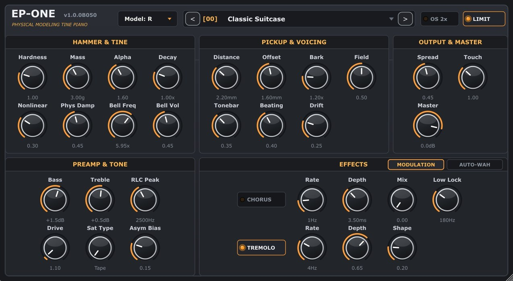

EP-ONE
静止した録音サンプルは一切なし。ハンマーの打撃からタイン、リード、剛性弦、真空管、光学トレモロまで毎サンプル物理演算で鳴り響く4モデル統合エレピ。指先のニュアンスに無限に応える、生きた弾き心地を。
EP-ONE 4-MODEL PHYSICAL WORKSTATION DECK

MODEL R：タイン＆トーンバー・エレクトリックピアノ
NEOPRENE HAMMER + EULER-BERNOULLI TINE + CDS TREMOLOネオプレンハンマーの粘弾性衝突モデルと、片持ちタイン×非対称トーンバーの双方向結合を物理演算。深いベルアタック、甘いバーク歪み、温かな2段階サスティンとCdS光学トレモロを完全再現します。
8 FEATURE HIGHLIGHTS // 機能ハイライト
4つの名機エレクトロメカニカル・キーボードの物理法則と電気回路を1台に凝縮した8つの革新。
Model R：タイン＆光学トレモロ
Hunt-Crossley粘弾性ハンマーとオイラー・ベルヌーイ梁タイン＋非対称トーンバー結合。3D電磁ピックアップの甘いバーク歪みとCdSフォトカプラ光学トレモロを搭載。
Model W：静電リード＆Class-AB
鍵域ごとのハンダ質量スケーリングを施した振動リードと高電圧静電容量スロットピックアップを再現。Class-ABプッシュプル歪み＋8段楕円スピーカー回折でウッディなパンチを生みます。
Model Y：剛性弦DWGエレクトリックグランド
ユニゾンデチューン付きデュアルDWG剛性弦と2次オールパス分散フィルタによる固有の非調和性を再現。ピエゾブリッジ、JFET ADAA歪み、3バンドBaxandall EQ＆AutoPanを統合。
Model H：2領域DWG＆リリーススナップ
真鍮タンジェント打鍵と粘着リリーススナップ＆フェルトサンプ音（105/210Hz）をDWG波伝搬へ直接注入。4スイッチ・デュアルコイルマトリクス、12AX7真空管、光学フェイザー＆インダクタワウを搭載。
無限ダイナミクス＆リアル再打鍵
ベロシティレイヤーの段差が一切存在せず、鳴っているタインや弦への連続再打鍵（Restrike）の位相干渉も実機そのままに振る舞います。
ADAA非線形歪み＆2倍オーバーサンプリング
全プリアンプ・JFET・12AX7真空管段にADAA（反微分アンチエイリアシング）を適用。さらにオプションの2倍ポリフェーズIIRオーバーサンプリングで高域まで澄み切った倍音を実現。
Railsbackストレッチ＆88鍵バランス
実機ピアノと同じRailsbackストレッチチューニング曲線と等ラウドネス補正を全88鍵へ適用。低音から最高音域まで淀みのない美しい響きを保ちます。
23種即戦力プリセット＆Pluginval Lv10
Classic Suitcase、70s Reed、80s Ballad Grand、1973 Stevie Funkなど23種の即戦力プリセットを収録。Tracktion Pluginval Level 10をクリアした鉄壁の安定性を誇ります。
EVERY SAMPLE SOLVED BY DIFFERENTIAL EQUATIONS // 内部DSPアーキテクチャ
静的オーディオのスナップショットではなく、衝突力学・梁振動・デジタル導波管（DWG）・電磁/静電誘導・真空管非線形回路を毎サンプルリアルタイムに解く物理モデリング・アーキテクチャ。
粘弾性ハンマー衝突＆梁モード共振
ネオプレン／フェルトの硬さに応じたHunt-Crossley非線形粘弾性接触でオイラー・ベルヌーイ片持ち梁（タイン／リード）を励振。弱打のベル音から強打の唸るバークまでシームレスに変化します。
分散型剛性弦＆2領域クラビDWG
Model Yではvan Walstijn 2次オールパス分散フィルタ付きデュアルDWG弦、Model Hでは真鍮タンジェントによる2領域散乱接合DWG＋リリーススナップ注入で圧倒的な実在感を実現。
仮想アナログ回路＆ゼロ確保リアルタイム設計
CdS光導電セルの記憶応答トレモロ、4段光学フェイザー、インダクタ飽和ワウ、ADAA真空管＆JFET段を統合。processBlock内のメモリ確保・ロック完全ゼロでPluginval Level 10を突破しています。
YOUTUBE SHOWCASE // 映像デモンストレーション
EP-ONE // OFFICIAL 4-MODEL DEMO VIDEO
現在デモンストレーション動画を準備中です。リリースと同時にYouTubeプレイヤーが公開されます。
動作環境・システム要件（Windows 64-bit / VST3）
本プラグインは Windows 10 / 11 (64-bit / AVX2推奨) のVST3ホスト（Ableton Live等）およびStandaloneに対応。EP-ONE.vst3 を C:\Program Files\Common Files\VST3\ へコピーするだけで即座に動作します。